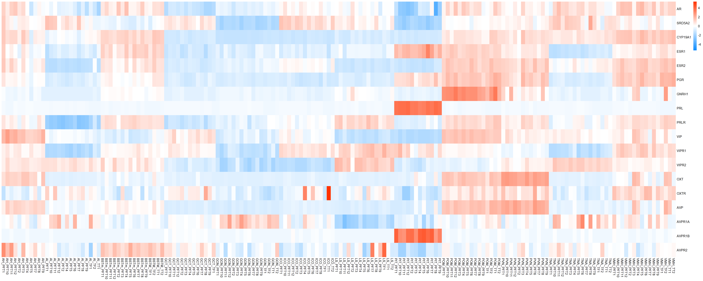
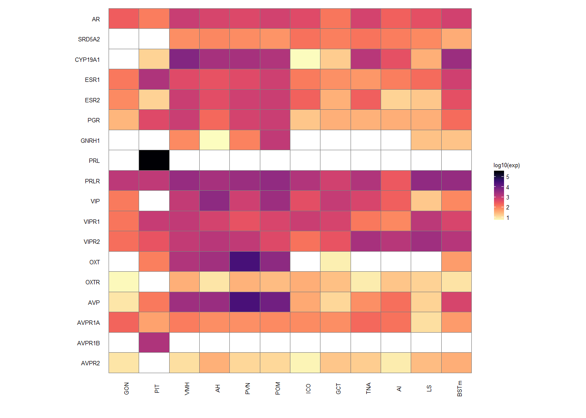

Candidate Gene Analysis
For manuscript: Neurogenomic landscape of male cooperative behavior in a wild bird
Last Substantive Change April 2021
2024-01-04
This document contains the differential expression results from
DESeq2 for our candidate genes. These candidates are:
AR, SRD5A2, LOC113993669, ESR1, ESR2, PGR, GNRH1, PRL, PRLR, VIP, VIPR1, VIPR2, LOC113983511, OXTR, LOC113983498, AVPR1A, AVPR1B, LOC113982601.
LOC113993669 is CYP19A1 (Aromatase)
LOC113983511 is OXT (Mesotocin)
LOC113983498 is vasotocin-neurophysin (AVP precursor)
LOC113982601 is AVPR2.
All p-values (raw and corrected) presented in this document are derived from the outputs of DESeq2 without further modification.
1 Gonads (GON)
The next sections are scatter plots showing the expression profiles of candidate genes in each tissue. The candidate genes were first selected from the DESeq2 results based on a raw p-value of <0.05, and then plotted for validation. We excluded genes which had low R^2, and/or highly influential observations from further analysis.
rm(list= ls()[!(ls() %in% keep)])
tissue="GON"
### Create subset for Status ####
gon_key<- subset(key_behav, Tissue=="GON")
gon_key<- droplevels(gon_key)
gon_data<- data[,colnames(data) %in% rownames(gon_key)]
#remove genes with less than 5 reads
gon_data$avg_count<- apply(gon_data, 1, mean)
gon_data<- gon_data[gon_data$avg_count>5,]
gon_data$avg_count<-NULL
#remove genes where >50% of samples have 0 gene expression
gon_data$percent_0<- apply(gon_data, 1, function(x)length(x[x==0]))
thresh<- ncol(gon_data)/2
gon_data<- gon_data[gon_data$percent_0<=thresh,]
gon_data$percent_0<-NULL
dd<- DESeqDataSetFromMatrix(countData=gon_data, colData=gon_key, design= ~ Batch)
dd<- DESeq(dd)
gd<- counts(dd,normalized=TRUE)
status_results<- gd[rownames(gd) %in% candidates2,]
status_results<- as.data.frame(t(status_results))
status_results$sampleID<- rownames(status_results)
status_results<- merge(gon_key, status_results, by="sampleID")
## data for continuous variables.
gon_norm<- norm_data[[5]]
rownames(gon_norm)<- gon_norm$X
gon_norm$X<- NULL
gon_norm<- as.data.frame(t(gon_norm))
gon_norm<- gon_norm[,colnames(gon_norm) %in% candidates2]
gon_norm$sampleID<- rownames(gon_norm)
gon_norm<- merge(gon_norm, gon_key, by="sampleID")| gene | design | baseMean | log2FoldChange | pvalue | padj |
|---|---|---|---|---|---|
| VIPR2 | ~ Year + Status + mean_T + Status:mean_T | 155.295 | -2.027 | 0.005 | 0.496 |
| AVPR1A | ~ Year + mean_T | 188.293 | 0.793 | 0.000 | 0.014 |
| PRLR | ~ Year + mean_T | 1011.597 | 0.324 | 0.020 | 0.441 |
| VIPR1 | ~ Year + strength.all_study | 120.522 | 0.459 | 0.022 | 0.587 |
1.1 Exploring status specific expression
A reviewer had a concern about overparameterizing the interaction models. Therefore, for the interaction models we ran an alternate set of models to test whether number of model parameters influenced whether we got a significant result on that gene. So we ran reduced models to test whether we still those effects in reduced models, and whether batch had a significant effect on any candidate genes. The latter will decide whether I need to also include the batch variables in follow up lms and AIC.
1.1.1 Batch
| gene | design | baseMean | log2FoldChange | pvalue | padj |
|---|---|---|---|---|---|
Batch wasn’t important for anyone!
1.1.2 Alternate models
| gene | design | baseMean | log2FoldChange | pvalue | padj |
|---|---|---|---|---|---|
| VIPR2 | ~ Status + mean_T + Status:mean_T | 155.295 | -2.019 | 0.001 | 0.379 |
| VIPR2 | ~ Year + Status + mean_T + Status:mean_T | 155.295 | -2.027 | 0.005 | 0.496 |
Therefore not only is the Year variable not important for expression in any of our candidate genes, but status specific expression of VIPR2 is not sensitive to inclusion of this parameter in the model. Therefore I am going to use the model without YEAR included.
1.1.3 AIC
1.1.3.1 VIPR2
| model | AIC | deltaAIC | lm_p | DESeq2_raw_p |
|---|---|---|---|---|
| VIPR2 ~ 1 | 149.6635 | NA | NA | NA |
| VIPR2 ~ Status | 151.5783 | -1.9147977 | 0.7949428 | 0.9993856 |
| VIPR2 ~ mean T | 149.9019 | -0.2383861 | 0.2371554 | 0.0615867 |
| VIPR2 ~ Status + mean_T + Status:mean_T | 148.0384 | 1.6251157 | 0.0576544 | 0.0014815 |

Not going to accept VIPR2 because it’s not better than the null.
1.2 Final Res
Note these decisions are made after the plotting below, but I am including a decision element in the plotting so that’s why it’s above.
1.3 Gene Plots

2 Pituitary (PIT)
Hereafter, I exclude repeated code from presentation, but it is available on the github repository. Any variation on the code presented previously is shown.
This one is a little more complicated because PFT3 was excluded from the overall strength DE analysis owing to some genes with strong outlier effects that I couldn’t remove otherwise. So we’re also going to compare results with and without PFT3.
FALSE [1] TRUE| gene | design | baseMean | log2FoldChange | pvalue | padj | woPFT3_baseMean | woPFT3_log2FoldChange | woPFT3_pvalue | woPFT3_padj |
|---|---|---|---|---|---|---|---|---|---|
| AVP | ~ Batch + Status + mean_T + Status:mean_T | 123.156 | -12.764 | 0.018 | 0.997 | NA | NA | NA | NA |
| AVPR1A | ~ Batch + Status + mean_T + Status:mean_T | 47.189 | 2.053 | 0.030 | 1.000 | NA | NA | NA | NA |
| AVP | ~ Batch + strength.all_study | 123.156 | 2.630 | 0.008 | 0.160 | 118.037 | 4.366 | 0.000 | 0.074 |
| AVP | ~ Batch + mean_T | 123.156 | 6.417 | 0.000 | 0.023 | NA | NA | NA | NA |
| AVPR1B | ~ Batch + strength.all_study | 1732.190 | 0.188 | 0.081 | 0.447 | 1814.603 | 0.298 | 0.030 | 0.446 |
| ESR1 | ~ Batch + Status | 1725.149 | -0.661 | 0.009 | 0.433 | NA | NA | NA | NA |
| ESR2 | ~ Batch + strength.all_study | 14.951 | -0.591 | 0.038 | 0.336 | 15.496 | -0.735 | 0.043 | 0.509 |
| OXT | ~ Batch + strength.all_study | 107.249 | 2.121 | 0.021 | 0.259 | 62.816 | 3.493 | 0.004 | 0.211 |
| OXT | ~ Batch + mean_T | 107.249 | 4.522 | 0.001 | 0.190 | NA | NA | NA | NA |
| PRL | ~ Batch + strength.all_study | 370352.282 | -0.431 | 0.000 | 0.016 | 379818.057 | -0.553 | 0.000 | 0.031 |
| VIPR1 | ~ Batch + strength.all_study | 918.679 | -0.504 | 0.002 | 0.083 | 974.371 | -0.321 | 0.151 | 0.682 |
| VIPR2 | ~ Batch + strength.all_study | 322.934 | -0.394 | 0.001 | 0.058 | 335.526 | -0.426 | 0.008 | 0.279 |
| VIPR2 | ~ Batch + mean_T | 322.934 | -0.519 | 0.017 | 0.632 | NA | NA | NA | NA |
2.1 Exploring status specific expression
2.1.1 Batch
| gene | design | baseMean | log2FoldChange | pvalue | padj |
|---|---|---|---|---|---|
| AR | ~ Batch + Status + mean_T + Status:mean_T | 112.321 | -1.095 | 0.039 | 0.144 |
| ESR1 | ~ Batch + Status + mean_T + Status:mean_T | 1725.149 | 0.545 | 0.014 | 0.077 |
| AVPR1B | ~ Batch + Status + mean_T + Status:mean_T | 1732.190 | -0.774 | 0.000 | 0.000 |
| PRL | ~ Batch + Status + mean_T + Status:mean_T | 370352.282 | 1.018 | 0.022 | 0.102 |
| OXT | ~ Batch + Status + mean_T + Status:mean_T | 107.249 | -4.846 | 0.038 | 0.143 |
| AVP | ~ Batch + Status + mean_T + Status:mean_T | 123.156 | -12.764 | 0.027 | 0.115 |
Batch is important for AVP.
2.1.2 Alternate models
| gene | design | baseMean | log2FoldChange | pvalue | padj |
|---|---|---|---|---|---|
| AVP | ~ Status + mean_T + Status:mean_T | 123.156 | -11.531 | 0.028 | 0.924 |
| AVP | ~ Batch + Status + mean_T + Status:mean_T | 123.156 | -12.764 | 0.018 | 0.997 |
| AVPR1A | ~ Batch + Status + mean_T + Status:mean_T | 47.189 | 2.053 | 0.030 | 1.000 |
Looks like AVPR1A is not stable to model form, and while AVP is stable to model form, the gene plots for this gene are rubbish (see below). I’m still going to plot it but likely going to exclude it.
2.1.3 AIC
2.1.3.1 AVPR1A
| model | AIC | deltaAIC | lm_p | DESeq2_raw_p |
|---|---|---|---|---|
| AVPR1A ~ Batch | 115.1184 | NA | 0.9089612 | NA |
| AVPR1A ~ Batch + Status | 117.0048 | -1.8863751 | 0.7764506 | 0.7861074 |
| AVPR1A ~ Batch + mean T | 115.9911 | -0.8727381 | 0.3710296 | 0.5124718 |
| AVPR1A ~ Batch + Status * mean T | 113.1438 | 1.9745992 | 0.0726925 | 0.0300191 |
Not going to accept AVPR1A, doesn’t beat AIC test and is sensitive to inclusion of Batch.
2.1.3.2 VIPR2
VIPR2 was found to be associated with both mean_T and strength.
| model | AIC | deltaAIC | lm_p | DESeq2_raw_p |
|---|---|---|---|---|
| VIPR2 ~ 1 | 150.6496 | NA | NA | NA |
| *VIPR2 ~ Strength | 144.7318 | 5.917786 | 0.0121093 | 0.0013403 |
| VIPR2 ~ mean T | 147.0481 | 3.601481 | 0.0349093 | 0.0172009 |


2.2 Final Res
I’m excluding AVP and OXT owing to errant expression patterns, I’m excluding ESR1 because of an influential observation, VIPR1 and AVPR1B because results don’t hold after removal of PFT3, and AVPR1A because it failed the AIC and model parameter tests.
2.3 Gene Plots

3 Ventromedial Hypothalamus (VMH)
This tissue used additional samples for the Status comparison - thus the code used to plot these figures is presented.
rm(list= ls()[!(ls() %in% keep)])
tissue="VMH"
vmh_key<- subset(key_behav, Tissue=="VMH")
vmh_key<- droplevels(vmh_key)
vmh_data<- data[,colnames(data) %in% rownames(vmh_key)]
#remove genes with less than 5 reads
vmh_data$avg_count<- apply(vmh_data, 1, mean)
vmh_data<- vmh_data[vmh_data$avg_count>5,]
vmh_data$avg_count<-NULL
#remove genes where >50% of samples have 0 gene expression
vmh_data$percent_0<- apply(vmh_data, 1, function(x)length(x[x==0]))
thresh<- ncol(vmh_data)/2
vmh_data<- vmh_data[vmh_data$percent_0<=thresh,]
vmh_data$percent_0<-NULL
dd<- DESeqDataSetFromMatrix(countData=vmh_data, colData=vmh_key, design= ~ Batch)
dd<- DESeq(dd)
vmh_norm<- norm_data[[12]]
rownames(vmh_norm)<- vmh_norm$X
vmh_norm$X<- NULL
vmh_norm<- as.data.frame(t(vmh_norm))
vmh_norm<- vmh_norm[,colnames(vmh_norm) %in% candidates2]
vmh_norm$sampleID<- rownames(vmh_norm)
vmh_norm<- merge(vmh_norm, vmh_key, by="sampleID")
gd<- counts(dd,normalized=TRUE)
status_results<- gd[rownames(gd) %in% candidates2,]
status_results<- as.data.frame(t(status_results))
status_results$sampleID<- rownames(status_results)
status_results<- merge(vmh_key, status_results, by="sampleID")| gene | design | baseMean | log2FoldChange | pvalue | padj |
|---|---|---|---|---|---|
| GNRH1 | ~ Batch + Year + Status + mean_T + Status:mean_T | 40.945 | 7.854 | 0.000 | 0.064 |
| AVPR1A | ~ Batch + Year + Status + mean_T + Status:mean_T | 131.759 | 2.227 | 0.003 | 0.455 |
| PGR | ~ Batch + Year + Status + mean_T + Status:mean_T | 751.303 | -1.048 | 0.005 | 0.608 |
| AR | ~ Batch + Year + strength.all_study | 951.594 | 0.632 | 0.010 | 0.104 |
| AVP | ~ Batch + Year + mean_T | 1481.917 | 2.511 | 0.002 | 0.327 |
| AVPR2 | ~ Batch + Year + mean_T | 10.815 | -1.125 | 0.008 | 0.588 |
| ESR2 | ~ Batch + Status | 944.935 | -0.445 | 0.003 | 0.660 |
| GNRH1 | ~ Batch + Year + strength.all_study | 40.945 | 2.786 | 0.034 | 0.281 |
| OXT | ~ Batch + Year + mean_T | 1460.675 | 3.140 | 0.004 | 0.394 |
3.1 Exploring status specific expression
A reviewer had a concern about overparameterizing the interaction models. Therefore, for the interaction models we ran an alternate set of models to test whether number of model parameters influenced whether we got a significant result on that gene. So we ran reduced models to test whether we still those effects in reduced models, and whether batch had a significant effect on any candidate genes. The latter will decide whether I need to also include the batch variables in follow up lms and AIC.
3.1.1 Batch
| gene | design | baseMean | log2FoldChange | pvalue | padj |
|---|---|---|---|---|---|
| GNRH1 | ~ Batch + Year + Status + mean_T + Status:mean_T | 40.945 | 7.854 | 0.000 | 0.001 |
| AVPR1A | ~ Batch + Year + Status + mean_T + Status:mean_T | 131.759 | 2.227 | 0.001 | 0.061 |
| AR | ~ Batch + Year + Status + mean_T + Status:mean_T | 951.594 | -0.783 | 0.002 | 0.090 |
| CYP19A1 | ~ Batch + Year + Status + mean_T + Status:mean_T | 5683.253 | -1.395 | 0.013 | 0.254 |
| VIPR1 | ~ Batch + Year + Status + mean_T + Status:mean_T | 1186.689 | -0.522 | 0.014 | 0.258 |
| PGR | ~ Batch + Year + Status + mean_T + Status:mean_T | 751.303 | -1.048 | 0.000 | 0.005 |
| ESR2 | ~ Batch + Year + Status + mean_T + Status:mean_T | 820.721 | 0.026 | 0.023 | 0.329 |
3.1.2 Alternate models
| gene | design | baseMean | log2FoldChange | pvalue | padj |
|---|---|---|---|---|---|
| GNRH1 | ~ Batch + Year + Status + mean_T + Status:mean_T | 40.945 | 7.854 | 0.000 | 0.064 |
| AVPR1A | ~ Batch + Year + Status + mean_T + Status:mean_T | 131.759 | 2.227 | 0.003 | 0.455 |
| PGR | ~ Batch + Year + Status + mean_T + Status:mean_T | 751.303 | -1.048 | 0.005 | 0.608 |
| NA | NA | NA | NA | NA | NA |
Batch + Year seems to be important
3.1.3 AIC
3.1.3.1 GNRH1

| model | AIC | deltaAIC | lm_p | DESeq2_raw_p |
|---|---|---|---|---|
| GNRH1 ~ 1 | 141.5179 | NA | NA | NA |
| GNRH1 ~ Batch + Year + Status | 142.6422 | -1.124297 | 0.0745542 | 0.8201317 |
| GNRH1 ~ Batch + Year + mean T | 137.9502 | 3.567625 | 0.0373972 | NA |
| GNRH1 ~ Batch + Year + Status + mean T + Status:meanT | 136.7399 | 4.777916 | 0.3478811 | 0.0000989 |
Rubbish
3.1.3.2 AVPR1A

Rubbish plot, and requires batch + year parameters to be significant. OVERPARAMETERIZATION.
3.1.3.3 PGR

Rubbish plot, and requires batch + year parameters to be significant. OVERPARAMETERIZATION.
3.2 Final Res
Note these decisions are made after the plotting below, but I am including a decision element in the plotting so that’s why it’s above.
I am excluding AR on account of low Rsq,GNRH1, AVP and OXT on account of influential observations and overparameterization.
3.3 Gene Plots

4 Anterior Hypothalamus (AH)
| gene | design | baseMean | log2FoldChange | pvalue | padj |
|---|---|---|---|---|---|
| GNRH1 | ~ Status | 5.334 | 1.749 | 0.04 | 0.581 |
In the latest revision, I realized there was a mistake in the code for AH so the results are slightly different for this nucleus and then this means we have a significant gene! But still no interaction effects.
4.1 Gene Plots
5 Paraventricular Nucleus (PVN)
| gene | design | baseMean | log2FoldChange | pvalue | padj |
|---|---|---|---|---|---|
| AR | ~ Status + mean_T + Status:mean_T | 543.241 | -0.724 | 0.007 | 0.842 |
| OXT | ~ Status + mean_T + Status:mean_T | 32779.237 | 1.204 | 0.033 | 0.979 |
| AR | ~ mean_T | 543.241 | 0.353 | 0.016 | 0.552 |
| AR | ~ strength.all_study | 543.241 | 0.192 | 0.035 | 0.584 |
| AVP | ~ strength.all_study | 30862.339 | -0.504 | 0.027 | 0.581 |
| AVPR2 | ~ strength.all_study | 14.871 | 0.498 | 0.024 | 0.581 |
| ESR2 | ~ Status | 818.718 | -0.641 | 0.006 | 0.177 |
| OXT | ~ strength.all_study | 32779.237 | -0.331 | 0.036 | 0.594 |
| VIPR1 | ~ Status | 380.233 | 0.307 | 0.024 | 0.358 |
5.1 Exploring status specific expression
A reviewer had a concern about overparameterizing the interaction models. Therefore, for the interaction models we ran an alternate set of models to test whether number of model parameters influenced whether we got a significant result on that gene. So we ran reduced models to test whether we still those effects in reduced models, and whether batch had a significant effect on any candidate genes. The latter will decide whether I need to also include the batch variables in follow up lms and AIC.
There were no relevant batch variables for PVN.
5.1.1 Alternate models
| gene | design | baseMean | log2FoldChange | pvalue | padj |
|---|---|---|---|---|---|
| AR | ~ Status + mean_T + Status:mean_T | 543.241 | -0.724 | 0.007 | 0.842 |
| OXT | ~ Status + mean_T + Status:mean_T | 32779.237 | 1.204 | 0.033 | 0.979 |
5.1.2 AIC
5.1.2.1 AR
| model | AIC | deltaAIC | lm_p | DESeq2_raw_p |
|---|---|---|---|---|
| AR ~ 1 | 157.9406 | NA | NA | NA |
| AR ~ Status | 159.9100 | -1.969347 | 0.8761214 | 0.8465120 |
| AR ~ mean T | 156.5464 | 1.394159 | 0.1007234 | 0.0157966 |
| *AR ~ Status + mean T + Status:meanT | 152.1256 | 5.815050 | 0.0391226 | 0.0071692 |
| AR ~ Strength | 155.4736 | 2.467020 | 0.0596537 | 0.0345817 |
5.1.2.2 OXT
| model | AIC | deltaAIC | lm_p | DESeq2_raw_p |
|---|---|---|---|---|
| OXT ~ 1 | 263.5999 | NA | NA | NA |
| OXT ~ Status | 264.9400 | -1.3400716 | 0.4694425 | 0.4351629 |
| OXT ~ mean T | 265.5424 | -1.9425292 | 0.8309753 | 0.8499582 |
| OXT ~ Status + mean T + Status:meanT | 264.4340 | -0.8340714 | 0.1127561 | 0.0328714 |
| OXT ~ Strength | 262.2297 | 1.3701415 | 0.1019376 | 0.0360569 |

5.2 Final Res
Note these decisions are made after the plotting below, but I am including a decision element in the plotting so that’s why it’s above.
I am excluding OXT, AVP,
5.3 Gene Plots

6 Medial Preoptic Area (POM)
| gene | design | baseMean | log2FoldChange | pvalue | padj |
|---|---|---|---|---|---|
| VIP | ~ Status + mean_T + Status:mean_T | 3497.113 | 0.624 | 0.002 | 0.348 |
| AR | ~ mean_T | 794.629 | 0.665 | 0.000 | 0.000 |
| AR | ~ Batch + Status | 828.546 | 0.667 | 0.000 | 0.347 |
| CYP19A1 | ~ mean_T | 1533.720 | 0.546 | 0.016 | 0.370 |
| GNRH1 | ~ mean_T | 1318.753 | 0.399 | 0.006 | 0.208 |
| PGR | ~ Batch + Status | 1060.152 | 0.443 | 0.006 | 0.701 |
| PRLR | ~ mean_T | 4007.589 | 0.254 | 0.001 | 0.054 |
| PRLR | ~ Batch + Status | 4693.061 | 0.232 | 0.016 | 0.910 |
6.1 Exploring status specific expression
A reviewer had a concern about overparameterizing the interaction models. Therefore, for the interaction models we ran an alternate set of models to test whether number of model parameters influenced whether we got a significant result on that gene. So we ran reduced models to test whether we still those effects in reduced models, and whether batch had a significant effect on any candidate genes. The latter will decide whether I need to also include the batch variables in follow up lms and AIC.
6.1.1 Batch
| gene | design | baseMean | log2FoldChange | pvalue | padj |
|---|---|---|---|---|---|
Batch wasn’t important for anyone!
6.1.2 Alternate models
| gene | design | baseMean | log2FoldChange | pvalue | padj |
|---|---|---|---|---|---|
| VIP | ~ Status + mean_T + Status:mean_T | 3497.113 | 0.624 | 0.002 | 0.348 |
VIP still looks good in the reduced model.
6.1.3 AIC
6.1.3.1 VIP
| model | AIC | deltaAIC | lm_p | DESeq2_raw_p |
|---|---|---|---|---|
| VIP ~ 1 | 175.5976 | NA | NA | NA |
| VIP ~ Status | 177.5578 | -1.960239 | 0.8607376 | 0.6559350 |
| VIP ~ mean T | 177.5926 | -1.995031 | 0.9505483 | 0.9479884 |
| VIP ~ Status + mean T + Status:mean T | 173.8064 | 1.791169 | 0.0321337 | 0.0024520 |
6.1.3.2 AR
| model | AIC | deltaAIC | lm_p | DESeq2_raw_p |
|---|---|---|---|---|
| AR ~ 1 | 157.3320 | NA | NA | NA |
| AR ~ Status | 155.3120 | 2.019918 | 0.0774724 | 0.0004304 |
| *AR ~ mean T | 144.9675 | 12.364422 | 0.0008233 | 0.0000002 |
| AR ~ Status * mean T | 147.2258 | 10.106137 | 0.4983141 | 0.9714454 |
picking mean T
6.1.3.3 PRLR
| model | AIC | deltaAIC | lm_p | DESeq2_raw_p |
|---|---|---|---|---|
| PRLR ~ 1 | 175.7063 | NA | NA | NA |
| PRLR ~ Status | 175.7720 | -0.065642 | 0.2208905 | 0.0158496 |
| *PRLR ~ mean T | 168.4998 | 7.206540 | 0.0074753 | 0.0007807 |
| PRLR ~ Status * mean T | 169.4355 | 6.270816 | 0.1794988 | 0.1864921 |
picking meanT
6.2 Final Res
Note these decisions are made after the plotting below, but I am including a decision element in the plotting so that’s why it’s above. I’m dropping VIP, AR (Status) + PRLR (Status)
6.3 Gene Plots

7 Dorsomedial Intercollicular Nucleus (ICo)
| gene | design | baseMean | log2FoldChange | pvalue | padj |
|---|---|---|---|---|---|
| OXTR | ~ Batch + Year + Status + mean_T + Status:mean_T | 23.858 | 3.536 | 0.024 | 0.000 |
| ESR2 | ~ Batch + Year + Status + mean_T + Status:mean_T | 233.803 | -0.910 | 0.035 | 0.000 |
| AVPR1A | ~ Batch + Year + Status + mean_T + Status:mean_T | 85.431 | 2.132 | 0.036 | 0.000 |
| VIP | ~ Batch + Year + mean_T | 405.910 | -0.983 | 0.011 | 0.172 |
| VIPR2 | ~ Batch + Year + strength.all_study | 150.055 | -0.351 | 0.016 | 0.195 |
7.1 Exploring status specific expression
A reviewer had a concern about overparameterizing the interaction models. Therefore, for the interaction models we ran an alternate set of models to test whether number of model parameters influenced whether we got a significant result on that gene. So we ran reduced models to test whether we still those effects in reduced models, and whether batch had a significant effect on any candidate genes. The latter will decide whether I need to also include the batch variables in follow up lms and AIC.
7.1.1 Batch
| gene | design | baseMean | log2FoldChange | pvalue | padj |
|---|---|---|---|---|---|
| PRLR | ~ Batch + Year + Status + mean_T + Status:mean_T | 1680.946 | 0.4 | 0.001 | 0.193 |
Batch wasn’t important for anyone identified as being significant for our interest variables.
7.1.2 Alternate models
| gene | design | baseMean | log2FoldChange | pvalue | padj |
|---|---|---|---|---|---|
| AVPR1A | ~ Status + mean_T + Status:mean_T | 85.431 | 1.814 | 0.019 | 1.000 |
| SRD5A2 | ~ Status + mean_T + Status:mean_T | 159.287 | -0.790 | 0.028 | 1.000 |
| OXTR | ~ Status + mean_T + Status:mean_T | 23.858 | 3.535 | 0.001 | 0.638 |
| AVP | ~ Status + mean_T + Status:mean_T | 44.992 | 1.757 | 0.009 | 0.861 |
| OXTR | ~ Batch + Year + Status + mean_T + Status:mean_T | 23.858 | 3.536 | 0.024 | 0.000 |
| ESR2 | ~ Batch + Year + Status + mean_T + Status:mean_T | 233.803 | -0.910 | 0.035 | 0.000 |
| AVPR1A | ~ Batch + Year + Status + mean_T + Status:mean_T | 85.431 | 2.132 | 0.036 | 0.000 |
OXTR and AVPR1A are robust to model choice.
7.1.3 AIC
7.1.3.1 OXTR
| model | AIC | deltaAIC | lm_p | DESeq2_raw_p |
|---|---|---|---|---|
| OXTR ~ 1 | 109.2379 | NA | NA | NA |
| OXTR ~ Status | 111.1880 | -1.9500375 | 0.8440949 | 0.8310673 |
| OXTR ~ mean T | 108.5720 | 0.6658985 | 0.1506183 | 0.2864778 |
| OXTR ~ Status + meanT + Status:meanT | 107.1228 | 2.1151169 | 0.0756889 | 0.0014851 |
Influential observations
7.1.3.2 AVPR1A
| model | AIC | deltaAIC | lm_p | DESeq2_raw_p |
|---|---|---|---|---|
| AVPR1A ~ 1 | 119.4667 | NA | NA | NA |
| AVPR1A ~ Status | 121.0788 | -1.6120640 | 0.5836725 | 0.7029493 |
| AVPR1A ~ mean T | 121.0556 | -1.5888843 | 0.5726409 | 0.6493596 |
| AVPR1A ~ Status + meanT + Status:meanT | 119.2868 | 0.1799397 | 0.0877082 | 0.0185961 |

7.2 Final Res
Reject ESR2 because it was sensitive to batch parameters. OXTR because of the influential observations and AVPR1A because it didn’t make the AIC test.
Note these decisions are made after the plotting below, but I am including a decision element in the plotting so that’s why it’s above.
7.3 Gene Plots
8 Midbrain Central Gray (GCT)
| gene | design | baseMean | log2FoldChange | pvalue | padj |
|---|---|---|---|---|---|
| PGR | ~ Batch + Status + mean_T + Status:mean_T | 36.895 | 1.861 | 0.005 | 0.132 |
| VIP | ~ Batch + Status + mean_T + Status:mean_T | 1047.430 | 1.588 | 0.006 | 0.143 |
| PRLR | ~ Batch + Status + mean_T + Status:mean_T | 734.935 | 0.703 | 0.011 | 0.200 |
| ESR1 | ~ Batch + Status + mean_T + Status:mean_T | 76.686 | 1.102 | 0.041 | 0.359 |
| AR | ~ Batch + strength.all_study | 149.977 | 0.215 | 0.032 | 0.530 |
| CYP19A1 | ~ Batch + mean_T | 17.704 | -1.269 | 0.002 | 0.347 |
| OXT | ~ Batch + Status | 8.100 | -3.087 | 0.005 | 0.175 |
| PGR | ~ Batch + mean_T | 36.895 | -0.801 | 0.014 | 0.710 |
| PGR | ~ Batch + strength.all_study | 36.895 | -0.656 | 0.001 | 0.138 |
| VIP | ~ Batch + mean_T | 1047.430 | -0.831 | 0.009 | 0.589 |
| VIP | ~ Batch + Status | 1036.449 | -0.852 | 0.046 | 0.637 |
| VIP | ~ Batch + strength.all_study | 1047.430 | -0.555 | 0.007 | 0.340 |
8.1 Exploring status specific expression
A reviewer had a concern about overparameterizing the interaction models. Therefore, for the interaction models we ran an alternate set of models to test whether number of model parameters influenced whether we got a significant result on that gene. So we ran reduced models to test whether we still those effects in reduced models, and whether batch had a significant effect on any candidate genes. The latter will decide whether I need to also include the batch variables in follow up lms and AIC.
8.1.1 Batch
| gene | design | baseMean | log2FoldChange | pvalue | padj |
|---|---|---|---|---|---|
| SRD5A2 | ~ Batch + Status + mean_T + Status:mean_T | 116.627 | -0.259 | 0.036 | 0.170 |
| AR | ~ Batch + Status + mean_T + Status:mean_T | 149.977 | -0.200 | 0.027 | 0.144 |
| VIPR1 | ~ Batch + Status + mean_T + Status:mean_T | 667.695 | 0.291 | 0.011 | 0.086 |
Batch isn’t important for VIP, ESR1, PGR, PRLR.
8.1.2 Alternate models
| gene | design | baseMean | log2FoldChange | pvalue | padj |
|---|---|---|---|---|---|
| VIP | ~ Status + mean_T + Status:mean_T | 1047.430 | 1.722 | 0.007 | 0.350 |
| ESR1 | ~ Status + mean_T + Status:mean_T | 76.686 | 1.079 | 0.037 | 0.579 |
| PGR | ~ Status + mean_T + Status:mean_T | 36.895 | 1.886 | 0.003 | 0.244 |
| PRLR | ~ Status + mean_T + Status:mean_T | 734.935 | 0.629 | 0.030 | 0.538 |
| PGR | ~ Batch + Status + mean_T + Status:mean_T | 36.895 | 1.861 | 0.005 | 0.132 |
| VIP | ~ Batch + Status + mean_T + Status:mean_T | 1047.430 | 1.588 | 0.006 | 0.143 |
| PRLR | ~ Batch + Status + mean_T + Status:mean_T | 734.935 | 0.703 | 0.011 | 0.200 |
| ESR1 | ~ Batch + Status + mean_T + Status:mean_T | 76.686 | 1.102 | 0.041 | 0.359 |
| NA | NA | NA | NA | NA | NA |
All are robust to batch parameter.
8.1.3 AIC
8.1.3.1 VIP

| model | AIC | deltaAIC | lm_p | DESeq2_raw_p |
|---|---|---|---|---|
| VIP ~ 1 | 190.5764 | NA | NA | NA |
| VIP ~ Status | 188.6497 | 1.926707 | 0.0774627 | 0.0460933 |
| VIP ~ mean T | 186.6658 | 3.910552 | 0.0302392 | 0.0085652 |
| *VIP ~ Status + mean T + Status:meanT | 179.7510 | 10.825368 | 0.0153550 | 0.0069405 |
| VIP ~ Strength | 188.2206 | 2.355806 | 0.0629259 | 0.0072800 |
Keep VIP
8.1.3.2 PGR

| model | AIC | deltaAIC | lm_p | DESeq2_raw_p |
|---|---|---|---|---|
| PGR ~ 1 | 109.73814 | NA | NA | NA |
| PGR ~ Status | 109.55316 | 0.1849763 | 0.1879611 | 0.1458070 |
| PGR ~ mean T | 105.36688 | 4.3712592 | 0.0244492 | 0.0143142 |
| *PGR ~ Status + mean T + Status:meanT | 93.92302 | 15.8151142 | 0.0020329 | 0.0027643 |
| PGR ~ Strength | 105.76276 | 3.9753773 | 0.0293451 | 0.0007425 |
Keep PGR.
8.1.3.3 ESR1

| model | AIC | deltaAIC | lm_p | DESeq2_raw_p |
|---|---|---|---|---|
| ESR1 ~ 1 | 115.4497 | NA | NA | NA |
| ESR1 ~ Status | 117.4082 | -1.9584865 | 0.8560436 | 0.8211006 |
| ESR1 ~ mean T | 116.0079 | -0.5581844 | 0.2848915 | 0.4275540 |
| *ESR1 ~ Status + mean T + Status:mean T | 111.5403 | 3.9094611 | 0.0280822 | 0.0371658 |
Keep ESR1
8.1.3.4 PRLR
| model | AIC | deltaAIC | lm_p | DESeq2_raw_p |
|---|---|---|---|---|
| PRLR ~ 1 | 157.7165 | NA | NA | NA |
| PRLR ~ Status | 159.2028 | -1.4862765 | 0.5233260 | 0.5416420 |
| PRLR ~ mean T | 159.4392 | -1.7226358 | 0.6391128 | 0.5345264 |
| PRLR ~ Status + mean T + Status:mean T | 157.0247 | 0.6918305 | 0.0709455 | 0.0300391 |
Pass all except PRLR
8.2 Final Res
Note these decisions are made after the plotting below, but I am including a decision element in the plotting so that’s why it’s above.
Exclude PRLR, AR strength, and PGR in mean T and strength and VIP in status, mean T and Strength, OXT due to outliers
8.3 Gene Plots

9 Nucleus Taenia (TnA)
| gene | design | baseMean | log2FoldChange | pvalue | padj |
|---|---|---|---|---|---|
| PRLR | ~ Batch + Status + mean_T + Status:mean_T | 1446.966 | 0.710 | 0.014 | 0.536 |
| VIP | ~ Batch + Status + mean_T + Status:mean_T | 562.184 | -0.750 | 0.032 | 0.628 |
| VIPR1 | ~ Batch + Status + mean_T + Status:mean_T | 104.473 | 1.010 | 0.032 | 0.628 |
| CYP19A1 | ~ Batch + Status + mean_T + Status:mean_T | 1146.073 | -0.780 | 0.048 | 0.679 |
| AR | ~ Batch + Status | 604.216 | -0.420 | 0.023 | 0.521 |
| AVP | ~ Batch + mean_T | 65.301 | 0.835 | 0.050 | 0.480 |
| AVP | ~ Batch + Status | 67.903 | 0.831 | 0.043 | 0.592 |
| AVPR1A | ~ Batch + strength.all_study | 172.360 | -0.708 | 0.043 | 0.605 |
| ESR2 | ~ Batch + mean_T | 182.462 | 0.810 | 0.001 | 0.079 |
| PGR | ~ Batch + strength.all_study | 27.859 | -0.353 | 0.041 | 0.595 |
9.1 Exploring status specific expression
A reviewer had a concern about overparameterizing the interaction models. Therefore, for the interaction models we ran an alternate set of models to test whether number of model parameters influenced whether we got a significant result on that gene. So we ran reduced models to test whether we still those effects in reduced models, and whether batch had a significant effect on any candidate genes. The latter will decide whether I need to also include the batch variables in follow up lms and AIC.
9.1.1 Batch
| gene | design | baseMean | log2FoldChange | pvalue | padj |
|---|---|---|---|---|---|
| VIPR2 | ~ Batch + Status + mean_T + Status:mean_T | 1970.939 | -0.155 | 0.040 | 0.237 |
| AR | ~ Batch + Status + mean_T + Status:mean_T | 655.560 | 0.436 | 0.039 | 0.233 |
| ESR1 | ~ Batch + Status + mean_T + Status:mean_T | 46.675 | 0.068 | 0.013 | NA |
| ESR2 | ~ Batch + Status + mean_T + Status:mean_T | 182.462 | 0.553 | 0.023 | NA |
Batch wasn’t important for any of the significant interaction models
9.1.2 Alternate models
| gene | design | baseMean | log2FoldChange | pvalue | padj |
|---|---|---|---|---|---|
| CYP19A1 | ~ Status + mean_T + Status:mean_T | 1146.073 | -0.781 | 0.045 | 0.827 |
| VIP | ~ Status + mean_T + Status:mean_T | 562.184 | -0.754 | 0.032 | 0.787 |
| VIPR1 | ~ Status + mean_T + Status:mean_T | 104.473 | 1.015 | 0.025 | 0.768 |
| PRLR | ~ Status + mean_T + Status:mean_T | 1446.966 | 0.707 | 0.026 | 0.771 |
| PRLR | ~ Batch + Status + mean_T + Status:mean_T | 1446.966 | 0.710 | 0.014 | 0.536 |
| VIP | ~ Batch + Status + mean_T + Status:mean_T | 562.184 | -0.750 | 0.032 | 0.628 |
| VIPR1 | ~ Batch + Status + mean_T + Status:mean_T | 104.473 | 1.010 | 0.032 | 0.628 |
| CYP19A1 | ~ Batch + Status + mean_T + Status:mean_T | 1146.073 | -0.780 | 0.048 | 0.679 |
All the interaction genes were stable in the reduced model.
PRLR, VIP VIPR1, CYP19A1.
9.1.3 AIC
9.1.3.1 CYP19A1
| model | AIC | deltaAIC | lm_p | DESeq2_raw_p |
|---|---|---|---|---|
| CYP19A1 ~ 1 | 178.7782 | NA | NA | NA |
| CYP19A1 ~ Status | 178.6238 | 0.1544437 | 0.1910783 | 0.5105279 |
| CYP19A1 ~ mean T | 180.3132 | -1.5350499 | 0.5437386 | 0.3376376 |
| CYP19A1 ~ Status + mean T + Status:mean T | 178.9365 | -0.1583199 | 0.1283528 | 0.0453733 |
Does not pass AIC test.
9.1.3.2 PRLR
| model | AIC | deltaAIC | lm_p | DESeq2_raw_p |
|---|---|---|---|---|
| PRLR ~ 1 | 182.6308 | NA | NA | NA |
| PRLR ~ Status | 181.4537 | 1.177132 | 0.1122971 | 0.3475519 |
| PRLR ~ mean T | 184.5552 | -1.924359 | 0.8065483 | 0.5702039 |
| PRLR ~ Status + mean T + Status:mean T | 179.3094 | 3.321437 | 0.1030935 | 0.0262885 |
Reject PRLR due to not sig in lm
9.1.3.3 VIP
| model | AIC | deltaAIC | lm_p | DESeq2_raw_p |
|---|---|---|---|---|
| VIP ~ 1 | 158.3812 | NA | NA | NA |
| VIP ~ Status | 159.7353 | -1.354124 | 0.4742129 | 0.2119499 |
| VIP ~ mean T | 156.6485 | 1.732704 | 0.0851830 | 0.0668693 |
| VIP ~ Status + mean T + Status:mean T | 156.7909 | 1.590313 | 0.1197970 | 0.0319905 |
Reject VIP
9.1.3.4 VIPR1
| model | AIC | deltaAIC | lm_p | DESeq2_raw_p |
|---|---|---|---|---|
| VIPR1 ~ 1 | 130.2985 | NA | NA | NA |
| VIPR1 ~ Status | 132.2583 | -1.959784 | 0.8582871 | 0.3738059 |
| VIPR1 ~ mean T | 128.9045 | 1.394020 | 0.1007304 | 0.1297460 |
| VIPR1 ~ Status + mean T + Status:mean T | 127.3370 | 2.961535 | 0.0769308 | 0.0254472 |

Reject VIPR1.
9.2 Final Res
Note these decisions are made after the plotting below, but I am including a decision element in the plotting so that’s why it’s above.
Reject VIP, CYP19A1 due to not passing the AIC tests, AR & AVP due to influential observations and PGR due to low R^2.
9.3 Gene Plots

10 Arcopallium Intermedium (Ai)
| gene | design | baseMean | log2FoldChange | pvalue | padj |
|---|---|---|---|---|---|
| VIPR1 | ~ Status + mean_T + Status:mean_T | 71.329 | 0.997 | 0.038 | 0.828 |
| AVP | ~ Status + mean_T + Status:mean_T | 136.395 | 2.063 | 0.041 | 0.834 |
| PGR | ~ mean_T | 28.989 | -0.530 | 0.025 | 0.499 |
| PRLR | ~ Batch + Status | 259.391 | -0.423 | 0.034 | 0.592 |
| VIP | ~ mean_T | 251.548 | 0.373 | 0.019 | 0.427 |
| VIP | ~ strength.all_study | 251.548 | 0.229 | 0.027 | 0.427 |
10.1 Exploring status specific expression
10.1.1 Batch
| gene | design | baseMean | log2FoldChange | pvalue | padj |
|---|---|---|---|---|---|
Batch wasn’t important for anyone!
10.1.2 Alternate models
| gene | design | baseMean | log2FoldChange | pvalue | padj |
|---|---|---|---|---|---|
| VIPR1 | ~ Status + mean_T + Status:mean_T | 71.329 | 0.997 | 0.038 | 0.828 |
| AVP | ~ Status + mean_T + Status:mean_T | 136.395 | 2.063 | 0.041 | 0.834 |
| NA | NA | NA | NA | NA | NA |
| NA | NA | NA | NA | NA | NA |
VIPR is stable to model parameterization.
10.1.3 AIC
10.1.3.1 VIPR1
| model | AIC | deltaAIC | lm_p | DESeq2_raw_p |
|---|---|---|---|---|
| VIPR1 ~ 1 | 97.59544 | NA | NA | NA |
| VIPR1 ~ Status | 99.28283 | -1.687393 | 0.6227596 | 0.6922684 |
| VIPR1 ~ mean T | 96.28066 | 1.314780 | 0.1089373 | 0.1295430 |
| VIPR1 ~ Status + meanT + Status:meanT | 92.12277 | 5.472665 | 0.0313361 | 0.0375837 |
Passed AIC, and lm, but really hinges on a single observation due to reduced sample size in Ai.
10.1.3.2 AVP
| model | AIC | deltaAIC | lm_p | DESeq2_raw_p |
|---|---|---|---|---|
| AVP ~ 1 | 129.4430 | NA | NA | NA |
| AVP ~ Status | 131.2984 | -1.855359 | 0.7379153 | 0.8425880 |
| AVP ~ mean T | 131.1302 | -1.687228 | 0.6226676 | 0.6442814 |
| AVP ~ Status + meanT + Status:meanT | 131.9397 | -2.496703 | 0.1690636 | 0.0412750 |
FAIL
10.1.3.3 VIP
distinguish between mean_T and strength
| model | AIC | deltaAIC | lm_p | DESeq2_raw_p |
|---|---|---|---|---|
| VIP ~ 1 | 125.3597 | NA | NA | NA |
| VIP ~ Status | 125.4163 | -0.0566066 | 0.2198144 | 0.9998643 |
| ?VIP ~ mean T | 121.3852 | 3.9744202 | 0.0312957 | 0.0185179 |
| VIP ~ Status + meanT + Status:meanT | 123.9862 | 1.3734434 | 0.3660956 | 0.2425596 |
| ?VIP ~ Strength | 122.2898 | 3.0698251 | 0.0473453 | 0.0265363 |

cannot distinguish between them. keep both.
10.2 Final Res
Note these decisions are made after the plotting below, but I am including a decision element in the plotting so that’s why it’s above. Exclude VIPR1,AVP, and PRLR
10.3 Gene Plots

11 Lateral Septum (LS)
| gene | design | baseMean | log2FoldChange | pvalue | padj |
|---|---|---|---|---|---|
| AR | ~ Status + mean_T + Status:mean_T | 357.892 | -1.083 | 0.005 | 0.279 |
| GNRH1 | ~ Batch + Status | 22.089 | 1.383 | 0.044 | 0.927 |
| GNRH1 | ~ strength.all_study | 23.067 | 1.126 | 0.001 | NA |
| SRD5A2 | ~ Batch + Status | 83.943 | 0.670 | 0.000 | 0.365 |
| VIP | ~ Batch + Status | 19.078 | -1.440 | 0.034 | 0.895 |
11.1 Exploring status specific expression
11.1.1 Batch
| gene | design | baseMean | log2FoldChange | pvalue | padj |
|---|---|---|---|---|---|
Batch wasn’t important for anyone!
11.1.2 Alternate models
| gene | design | baseMean | log2FoldChange | pvalue | padj |
|---|---|---|---|---|---|
| AR | ~ Status + mean_T + Status:mean_T | 357.892 | -1.083 | 0.005 | 0.279 |
AR was stable under a 1 parameter reduced model.
11.1.3 AIC
11.1.3.1 AR
| model | AIC | deltaAIC | lm_p | DESeq2_raw_p |
|---|---|---|---|---|
| AR ~ 1 | 150.1382 | NA | NA | NA |
| AR ~ Status | 151.0962 | -0.9579925 | 0.3633241 | 0.3237018 |
| AR ~ mean T | 152.1373 | -1.9990700 | 0.9783384 | 0.9756612 |
| AR ~ Status + meanT + Status:meanT | 148.3358 | 1.8024519 | 0.0444352 | 0.0045555 |

fail
11.2 Final Res
Note these decisions are made after the plotting below, but I am including a decision element in the plotting so that’s why it’s above.
AR failed tests above, GNRH1 and VIP have influential observations.
11.3 Gene Plots

12 Bed Nucleus of the Stria Terminalis (BSTm)
| gene | design | baseMean | log2FoldChange | pvalue | padj |
|---|---|---|---|---|---|
| ESR2 | ~ Status + mean_T + Status:mean_T | 381.353 | 1.296 | 0.006 | 0.602 |
| ESR1 | ~ Status + mean_T + Status:mean_T | 731.751 | 0.862 | 0.041 | 0.880 |
| AR | ~ Batch + Status | 691.964 | 0.567 | 0.001 | 0.210 |
| ESR2 | ~ strength.all_study | 381.353 | -0.299 | 0.047 | 0.604 |
| PGR | ~ strength.all_study | 174.573 | -0.334 | 0.001 | 0.152 |
12.1 Exploring status specific expression
A reviewer had a concern about overparameterizing the interaction models. Therefore, for the interaction models we ran an alternate set of models to test whether number of model parameters influenced whether we got a significant result on that gene. So we ran reduced models to test whether we still those effects in reduced models, and whether batch had a significant effect on any candidate genes. The latter will decide whether I need to also include the batch variables in follow up lms and AIC.
12.1.1 Batch
| gene | design | baseMean | log2FoldChange | pvalue | padj |
|---|---|---|---|---|---|
Batch wasn’t important for anyone!
12.1.2 Alternate models
| gene | design | baseMean | log2FoldChange | pvalue | padj |
|---|---|---|---|---|---|
| ESR2 | ~ Status + mean_T + Status:mean_T | 381.353 | 1.296 | 0.006 | 0.602 |
| ESR1 | ~ Status + mean_T + Status:mean_T | 731.751 | 0.862 | 0.041 | 0.880 |
Both ESR1 and ESR2 pass the model stability test.
12.1.3 AIC
12.1.3.1 ESR1
| model | AIC | deltaAIC | lm_p | DESeq2_raw_p |
|---|---|---|---|---|
| ESR1 ~ 1 | 168.2636 | NA | NA | NA |
| ESR1 ~ Status | 169.9795 | -1.7158867 | 0.6350640 | 0.6664170 |
| ESR1 ~ mean T | 167.7585 | 0.5050749 | 0.1585796 | 0.1668334 |
| ESR1 ~ Status + meanT + Status:meanT | 167.4537 | 0.8098858 | 0.1017418 | 0.0411355 |
Fail AIC test
12.1.3.2 ESR2
| model | AIC | deltaAIC | lm_p | DESeq2_raw_p |
|---|---|---|---|---|
| ESR2 ~ 1 | 158.9387 | NA | NA | NA |
| ESR2 ~ Status | 160.5990 | -1.6602298 | 0.6037424 | 0.4084309 |
| ESR2 ~ mean T | 158.1410 | 0.7977555 | 0.1362164 | 0.1609957 |
| *ESR2 ~ Status + meanT + Status:meanT | 155.8964 | 3.0423268 | 0.0482144 | 0.0060760 |
| ESR2 ~ Strength | 158.3010 | 0.6377549 | 0.1479658 | 0.0467527 |

12.2 Final Res
Note these decisions are made after the plotting below, but I am including a decision element in the plotting so that’s why it’s above. Excluding strength ESR2 due to low R^2
12.3 Gene Plots

13 Heat map of all candidate genes
Scaled according to individual gene’s expression.

FALSE png
FALSE 213.1 Average expression plot

14 Final Results Heatmaps
FALSE R version 4.0.2 (2020-06-22)
FALSE Platform: x86_64-w64-mingw32/x64 (64-bit)
FALSE Running under: Windows 10 x64 (build 19045)
FALSE
FALSE Matrix products: default
FALSE
FALSE locale:
FALSE [1] LC_COLLATE=English_Australia.1252 LC_CTYPE=English_Australia.1252
FALSE [3] LC_MONETARY=English_Australia.1252 LC_NUMERIC=C
FALSE [5] LC_TIME=English_Australia.1252
FALSE
FALSE attached base packages:
FALSE [1] grid parallel stats4 stats graphics grDevices utils
FALSE [8] datasets methods base
FALSE
FALSE other attached packages:
FALSE [1] viridis_0.6.1 viridisLite_0.4.0
FALSE [3] WGCNA_1.69 fastcluster_1.1.25
FALSE [5] dynamicTreeCut_1.63-1 RColorBrewer_1.1-2
FALSE [7] pheatmap_1.0.12 MASS_7.3-51.6
FALSE [9] VennDiagram_1.6.20 futile.logger_1.4.3
FALSE [11] kableExtra_1.3.1 DESeq2_1.28.1
FALSE [13] SummarizedExperiment_1.18.1 DelayedArray_0.14.0
FALSE [15] matrixStats_0.56.0 Biobase_2.48.0
FALSE [17] GenomicRanges_1.40.0 GenomeInfoDb_1.24.0
FALSE [19] IRanges_2.22.2 S4Vectors_0.26.1
FALSE [21] BiocGenerics_0.34.0 stringr_1.4.0
FALSE [23] ggpubr_0.4.0 ggplot2_3.4.4
FALSE [25] reshape2_1.4.4 plyr_1.8.6
FALSE
FALSE loaded via a namespace (and not attached):
FALSE [1] readxl_1.3.1 backports_1.1.7 Hmisc_4.4-0
FALSE [4] systemfonts_1.0.3 splines_4.0.2 BiocParallel_1.22.0
FALSE [7] digest_0.6.25 foreach_1.5.0 htmltools_0.5.2
FALSE [10] GO.db_3.11.4 fansi_0.4.1 magrittr_2.0.1
FALSE [13] checkmate_2.0.0 memoise_1.1.0 cluster_2.1.0
FALSE [16] doParallel_1.0.15 openxlsx_4.1.5 annotate_1.66.0
FALSE [19] jpeg_0.1-8.1 colorspace_1.4-1 blob_1.2.1
FALSE [22] rvest_1.0.2 textshaping_0.3.6 haven_2.3.1
FALSE [25] xfun_0.29 dplyr_1.0.7 crayon_1.4.2
FALSE [28] RCurl_1.98-1.2 genefilter_1.70.0 impute_1.62.0
FALSE [31] survival_3.2-3 iterators_1.0.12 glue_1.5.1
FALSE [34] gtable_0.3.0 zlibbioc_1.34.0 XVector_0.28.0
FALSE [37] webshot_0.5.2 car_3.0-8 abind_1.4-5
FALSE [40] scales_1.3.0 futile.options_1.0.1 DBI_1.1.0
FALSE [43] rstatix_0.7.0 Rcpp_1.0.7 xtable_1.8-4
FALSE [46] htmlTable_2.0.1 foreign_0.8-80 bit_4.0.4
FALSE [49] preprocessCore_1.50.0 Formula_1.2-3 htmlwidgets_1.5.3
FALSE [52] httr_1.4.2 acepack_1.4.1 ellipsis_0.3.2
FALSE [55] pkgconfig_2.0.3 XML_3.99-0.5 farver_2.0.3
FALSE [58] nnet_7.3-14 locfit_1.5-9.4 utf8_1.1.4
FALSE [61] tidyselect_1.1.0 labeling_0.3 rlang_1.1.2
FALSE [64] AnnotationDbi_1.50.0 munsell_0.5.0 cellranger_1.1.0
FALSE [67] tools_4.0.2 cli_3.6.1 generics_0.0.2
FALSE [70] RSQLite_2.2.0 broom_0.7.10 evaluate_0.14
FALSE [73] fastmap_1.1.0 yaml_2.2.1 ragg_1.2.1
FALSE [76] knitr_1.29 bit64_0.9-7 zip_2.0.4
FALSE [79] purrr_0.3.4 nlme_3.1-148 formatR_1.8
FALSE [82] xml2_1.3.2 compiler_4.0.2 rstudioapi_0.13
FALSE [85] curl_4.3 png_0.1-7 ggsignif_0.6.0
FALSE [88] tibble_3.1.6 geneplotter_1.66.0 stringi_1.4.6
FALSE [91] highr_0.8 forcats_0.5.1 lattice_0.20-41
FALSE [94] Matrix_1.6-4 vctrs_0.6.5 pillar_1.6.4
FALSE [97] lifecycle_1.0.4 jquerylib_0.1.4 data.table_1.13.0
FALSE [100] cowplot_1.0.0 bitops_1.0-6 R6_2.4.1
FALSE [103] latticeExtra_0.6-29 gridExtra_2.3 rio_0.5.16
FALSE [106] codetools_0.2-16 lambda.r_1.2.4 assertthat_0.2.1
FALSE [109] withr_2.5.2 GenomeInfoDbData_1.2.3 mgcv_1.8-31
FALSE [112] hms_1.1.1 rpart_4.1-15 tidyr_1.1.4
FALSE [115] rmarkdown_2.11 carData_3.0-4 base64enc_0.1-3